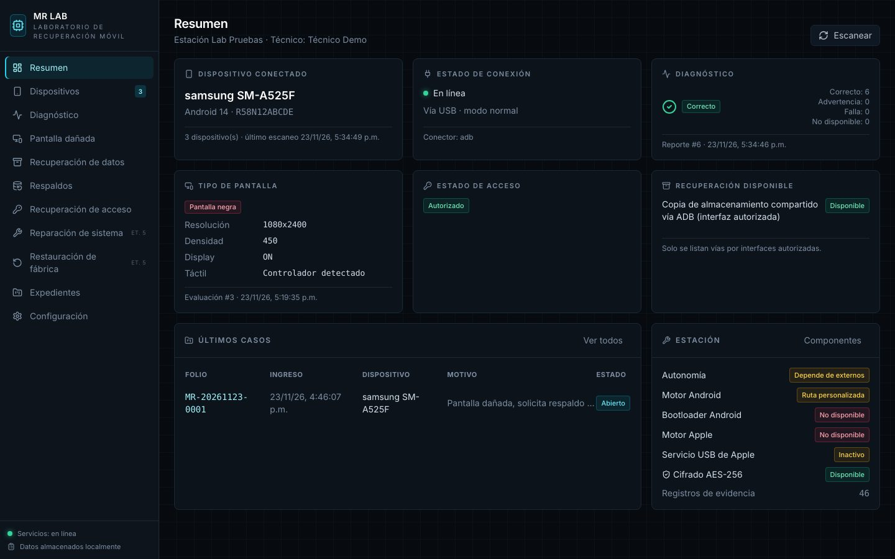

Estación de trabajo para Windows que detecta y diagnostica teléfonos Android y Apple, evalúa pantallas dañadas, respalda datos cifrados, repara y restablece por métodos del fabricante, analiza la recuperación de acceso por vías oficiales y documenta cada operación en expedientes con registro de evidencias verificable.

Capturas de la aplicación real en ejecución. El Samsung que aparece es un dispositivo de prueba simulado que se usa en las pruebas automáticas; con un teléfono conectado se muestran sus datos reales.
Descarga el instalador de la última versión y ejecútalo. No necesitas instalar nada más para Android.
Descargar MRLab-Setup.exeRequiere Git, Node.js 20+ y Python 3.11+.
git clone https://github.com/romeroR2402/mr-labDentro de la carpeta mr-lab.
npm install && pip install -r backend/requirements.txt && npm run devCrea release\MRLab-Setup-0.2.0.exe con los motores integrados.
powershell -ExecutionPolicy Bypass -File scripts\build-windows.ps1